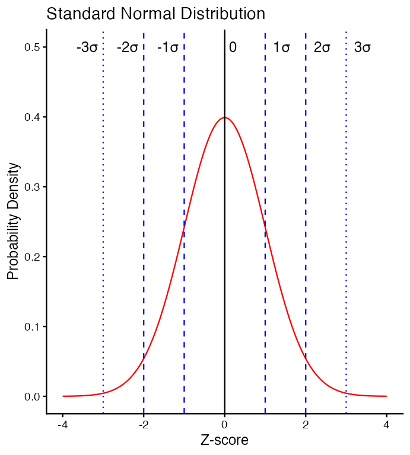
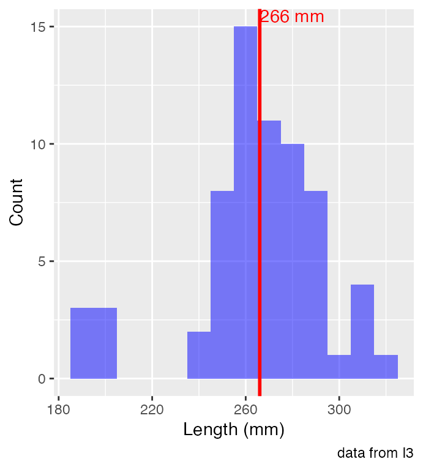
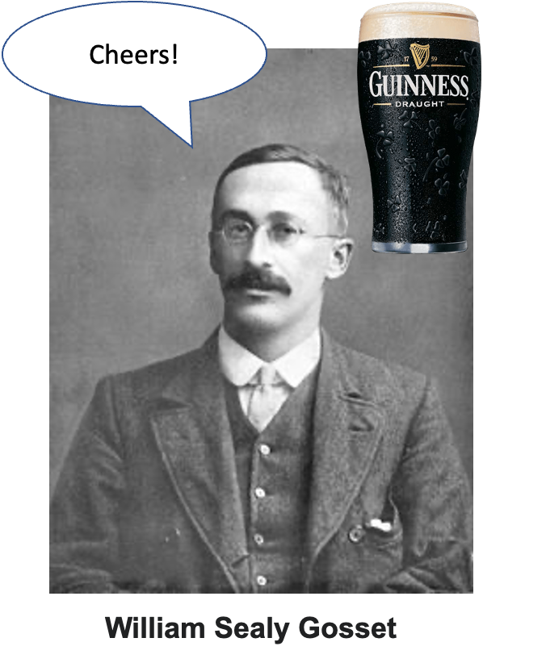
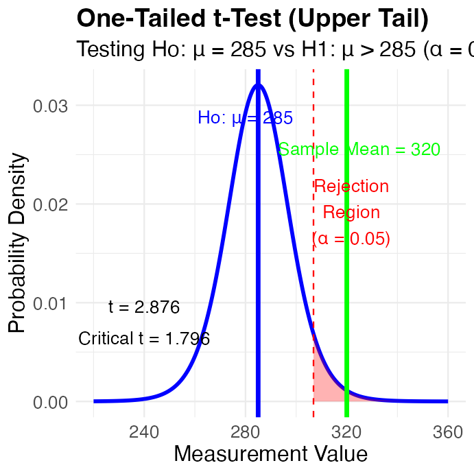
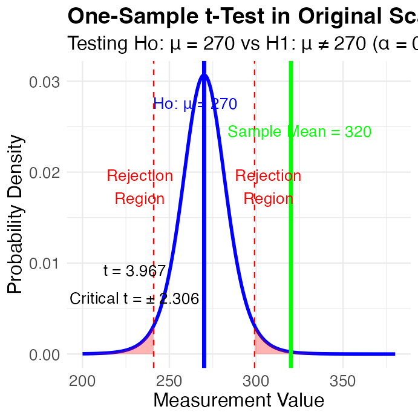
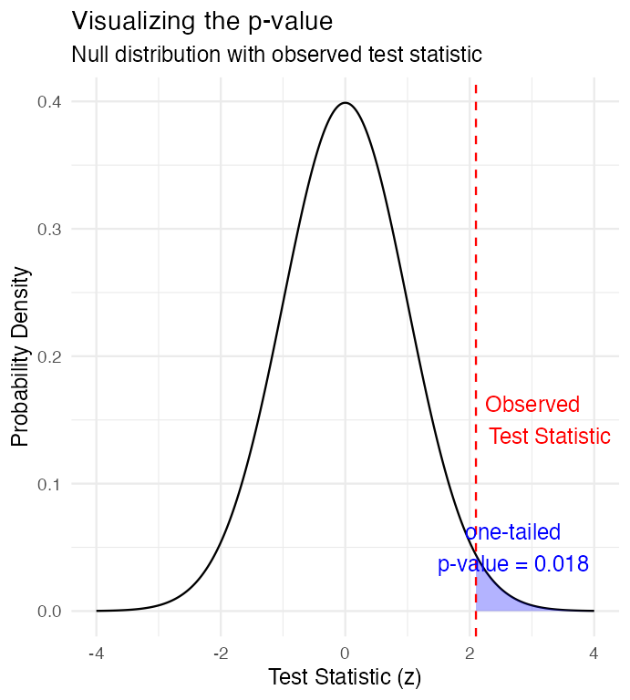
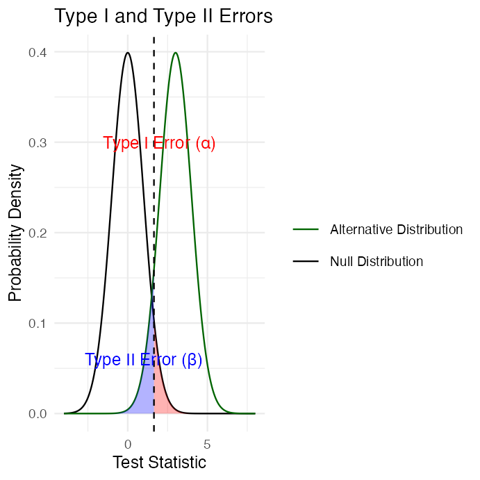

Lecture: Probability & Inference
Foundations of inference
Probability
Inference
Probability distributions, the standard normal and t-distributions, Z-scores, confidence intervals, one- and two-tailed hypothesis testing, p-values, and Type I/II error — on the Arctic grayling length dataset.
Probability and Statistical Inference
- Review of probability distributions
- Standard normal distribution and Z-scores
- Standard error and confidence intervals
- Statistical inference fundamentals
- Hypothesis testing principles
Practice Exercise 1: Exploring the Grayling Dataset
TipPractice Exercise 1: Exploring the Grayling Dataset
Let’s explore the Arctic grayling data from lakes I3 and I8. Use the grayling_df data frame to create basic summary statistics.
# Write your code here to explore the basic structure of the data
# also note plotting a box plot is really useful
# Calculate summary statistics
grayling_summary <- grayling_df %>%
group_by(lake) %>%
summarize(
mean_length = mean(length_mm, na.rm = TRUE),
sd_length = sd(length_mm, na.rm = TRUE),
se_length = sd_length/sqrt(sum(!is.na(length_mm))),
count = sum(!is.na(length_mm)),
.groups = "drop")
grayling_summary# A tibble: 2 × 5
lake mean_length sd_length se_length count
<chr> <dbl> <dbl> <dbl> <int>
1 I3 266. 28.3 3.48 66
2 I8 363. 52.3 5.18 102Probability Distributions
Probability Distribution Functions
- A probability distribution describes the probability of different outcomes in an experiment
- We’ve seen histograms of observed data
- Theoretical distributions help us model and understand real-world data
- We will focus on a standard normal distribution and a students t distribution
Note
📖 Reference
Gotelli & Ellison, A Primer of Ecological Statistics, Ch. 2 — Random Variables and Probability Distributions.

The Standard Normal Distribution
The standard normal distribution is crucial for understanding statistical inference:
- Has mean (μ) = 0 and standard deviation (σ) = 1
- Symmetrical bell-shaped curve
- Area under the curve = 1 (total probability)
- Approximately:
- 68% of data within ±1σ of the mean
- 95% of data within ±2σ of the mean - really 1.96σ
- 99.7% of data within ±3σ of the mean
Z-scores allow us to convert any normal distribution to the standard normal distribution.
Note
📖 Reference
Whitlock & Schluter, Analysis of Biological Data, Ch. 10 — The Normal Distribution.

Practice Exercise 2: Calculating Z-scores of lake I3
TipPractice Exercise 2: Calculating Z-scores
Let’s practice converting raw values to Z-scores using the Arctic grayling data.
Z Score = (length - mean) / standard deviation
# Calculate the mean and standard deviation of fish lengths
mean_length <- mean(i3_df$length_mm, na.rm = TRUE)
sd_length <- sd(i3_df$length_mm, na.rm = TRUE)
# Calculate Z-scores for fish lengths
i3_df <- i3_df %>%
mutate(z_score = (length_mm - mean_length) / sd_length)
# View the first few rows with Z-scores
head(i3_df)# A tibble: 6 × 6
site lake species length_mm mass_g z_score
<dbl> <chr> <chr> <dbl> <dbl> <dbl>
1 113 I3 arctic grayling 266 135 0.0139
2 113 I3 arctic grayling 290 185 0.862
3 113 I3 arctic grayling 262 145 -0.127
4 113 I3 arctic grayling 275 160 0.332
5 113 I3 arctic grayling 240 105 -0.905
6 113 I3 arctic grayling 265 145 -0.0214The fish data as a z score
So if we plot this data what does it look like in a standard normal distribution?

Z-score Results
How to get area under 1 STD DEV?
Proportion within 1 standard deviation = sum of absolute values of Z Scores that are less than or equal to 1 divided by the number in the sample…
Remember in a true normal distribution it is 68% within 1 std dev.
should be approximately (varies if distribution is not normal):
- 68% of data within ±1σ of the mean
- 95% of data within ±2σ of the mean - really 1.96σ
- 99.7% of data within ±3σ of the mean
# What proportion of fish are within 1 standard deviation of the mean?
within_1sd <- sum(abs(i3_df$z_score) <= 1, na.rm = TRUE) / sum(!is.na(i3_df$z_score))
cat("Proportion within 1 SD:", round(within_1sd * 100, 1), "%\n")Proportion within 1 SD: 81.8 %Standard normal distribution - Fish Data
You want to know things about this population like
- probability of a fish having a certain length (e.g., > 300 mm)
- Can solve this by integrating the area under curve
- But it is tedious to do every time
- Instead
- we can use the standard normal distribution (SND)
- and can use the proportions from the density curve
# A tibble: 1 × 1
mean_length
<dbl>
1 266.
Standard normal distribution properties
Standard Normal Distribution
- “benchmark” normal distribution with µ = 0, σ = 1
- The Standard Normal Distribution is defined so that:
~68% of the curve area within +/- 1 σ of the mean,
~95% within +/- 2 σ of the mean,
~99.7% within +/- 3 σ of the mean
*remember σ = standard deviation

Using Z-tables
Areas under curve of Standard Normal Distribution
- Calculated once for the standard normal curve — no sample size needed (unlike the t-table, which needs df)
- Can be looked up in z-table
- No need to integrate
- Any normally distributed data can be standardized
transformed into the standard normal distribution
a value can be looked up in a table

Z-score Formula
Done by converting original data points to z-scores
- Z-scores calculated as:
\(\text{Z = }\frac{x_i-\mu}{\sigma}\)
- z = z-score for observation
- xi = original observation
- µ = mean of data distribution
- σ = SD of data distribution
So lets do this for a fish that is 300mm long and guess the probability of catching something larger
z = (300 - 265.61)/28.3 = 1.215194

Z-score example from table
Done by converting original data points to z-scores
- Z-scores calculated as:
\(\text{Z = }\frac{X_i-\mu}{\sigma}\)
- z = z-score for observation
- xi = original observation
- µ = mean of data distribution
- σ = SD of data distribution
So lets do this for a fish that is 300mm long and guess the probability of catching something larger
- z = (300 - 265.61)/28.3 = 1.22
- look up 1.2 on left and 0.02 on top to get 0.8888 in table
- Means 88.9% is the area left of the curve and
- 100 - 88.9 = 11.1% of fish are expected to be longer
At what point do you think its not likely to catch a larger fish - what percentage?
do this the other way using that percent and why?

Z-score example calculation in r
We can use R to get these values easier…
# For standard normal distribution (mean=0, sd=1):
- pnorm(z) # gives cumulative probability (area to the left)
- qnorm(p) # gives z-value for a given probability
- dnorm(z) # gives probability density
# --- Look up OUR fish: the 300 mm grayling, z = 1.22 ---
z_fish <- 1.22
pnorm(z_fish) # 0.8888 -> 88.9% of fish are SHORTER than 300 mm[1] 0.88876761 - pnorm(z_fish) # 0.1112 -> 11.1% are LONGER (matches the z-table slide)[1] 0.1112324# --- Where does the famous 1.96 come from? ---
# "95% within +/- 2 SD" is the rule of thumb; the exact value is 1.96.
pnorm(2) - pnorm(-2) # 0.9545 -> +/-2 SD is really 95.4%, not 95%[1] 0.9544997pnorm(1.96) - pnorm(-1.96) # 0.9500 -> +/-1.96 SD is exactly 95%[1] 0.9500042qnorm(0.975) # 1.96 <- the z with 2.5% in each tail[1] 1.959964qnorm(0.95) # 1.645 <- the z with 5% in ONE tail (we use this next slide)[1] 1.644854We can now use this for fun in the fish
Lets say we are interested in knowing at what point from I3 it is not likely to catch a larger fish?
Maybe we expect 95% of the time to catch a fish that is “common” but the 5% is the unlikely portion….
# Examples:
# What fish length corresponds to the top 5% (unlikely)?
top_5_percent_z <- qnorm(0.95) # z-score for 95th percentile
unlikely_length <- mean_length + (top_5_percent_z * sd_length)
cat("Only 5% of fish are longer than:", round(unlikely_length, 1), "mm\n")Only 5% of fish are longer than: 312.2 mmcat("This corresponds to z-score:", round(top_5_percent_z, 3), "\n")This corresponds to z-score: 1.645 But wait — are these fish actually normal?
Every probability we just calculated assumed a normal distribution. Let’s check that assumption.
- The normal curve says 68% of fish should be within 1 SD
- Our fish: 81.8% are
- Shapiro-Wilk test: p = 0.0002 — significantly non-normal
So how wrong were we?
| normal theory | actual data | |
|---|---|---|
| 95th percentile | 312.2 mm | 310.0 mm |
| P(fish > 300 mm) | 11.2% | 7.6% |
The percentile is fine. The tail probability is off by a third — and the tails are exactly where we do hypothesis testing.
This is why we check assumptions before trusting a p-value.
# Does the normal model actually fit?
shapiro.test(i3_df$length_mm)
Shapiro-Wilk normality test
data: i3_df$length_mm
W = 0.91051, p-value = 0.0001623# theory vs reality out in the tail
mean_i3 <- mean(i3_df$length_mm, na.rm = TRUE)
sd_i3 <- sd(i3_df$length_mm, na.rm = TRUE)
cat("normal theory P(>300):",
round(100 * (1 - pnorm(300, mean_i3, sd_i3)), 1), "%\n")normal theory P(>300): 11.2 %cat("actual P(>300):",
round(100 * mean(i3_df$length_mm > 300, na.rm = TRUE), 1), "%\n")actual P(>300): 7.6 %What this means
- Given that we can: transform data to z-scores from standard normal distribution…
- …figure out area under the curve (probability) associated with range of z-scores…
- …can therefore figure out probability associated with a range of original data
Careful: two different distributions
We have now used the normal curve for two different things. Keep them straight:
| Question | Spread to use |
|---|---|
| How long is a single fish? | SD (s) |
| Where is the population mean? | SE (s/√n) |
- The distribution of fish is as wide as the fish actually are — it does not get narrower if you catch more fish
- The distribution of sample means gets narrower as n grows, because averages are more stable than individuals
That is why:
- “5% of fish are longer than 312 mm” uses SD
- “the 95% CI for mean length is 258.6–272.6 mm” uses SE
Using SE when you meant SD makes your interval about √n times too narrow.
sd_i3 <- sd(i3_df$length_mm, na.rm = TRUE)
n_i3 <- sum(!is.na(i3_df$length_mm))
se_i3 <- sd_i3 / sqrt(n_i3)
cat("SD (spread of fish): ", round(sd_i3, 1), "mm\n")SD (spread of fish): 28.3 mmcat("SE (spread of means): ", round(se_i3, 1), "mm\n")SE (spread of means): 3.5 mmcat("n =", n_i3, " -> SE is", round(sd_i3/se_i3, 1), "x smaller\n")n = 66 -> SE is 8.1 x smallerSo what is next…
We can look at Standard normal distributions and know probability of a value being in a range under the standard normal curve…
Previously we had calculated Standard Error and Confidence Intervals -
- Now can assess our confidence that the population mean is within a certain range
- Can use t distribution to ask questions like:
- “What is probability of getting sample with mean = ȳ from population with mean = µ?“ (1 sample t-test)
- “What is the probability that two samples came from same population?” (2 sample t-test)
- “What is probability of getting sample with mean = ȳ from population with mean = µ?“ (1 sample t-test)
When Population σ is Unknown
When calculating confidence intervals we usually DON’T know the population σ (standard deviation) or 𝝁 population mean
- we estimate σ from the sample, using s
- that estimate carries its own uncertainty — so the z distribution is too narrow
- whenever σ is estimated, use t — at any sample size
- t and z agree to ~2 decimals once n is past ~30, which is where the “n > 30” rule of thumb comes from — it’s a convenience, not the rule
Instead, we use Student’s t distribution

Understanding t-distribution
When sample sizes are small, the t-distribution is more appropriate than the normal distribution.
- Similar to normal distribution but with heavier tails
- Shape depends on degrees of freedom (df = n-1)
- With large df (>30), approaches the normal distribution
- Used for:
Small sample sizes
When population standard deviation is unknown
Calculating confidence intervals
Conducting t-tests

Student’s t-distribution Formula
To calculate CI for sample from “unknown” population:
\(\text{CI} = \bar{y} \pm t \cdot \frac{s}{\sqrt{n}}\)
Where:
- ȳ is sample mean
- 𝑛 is sample size
- s is sample standard deviation
- t t-value corresponding the probability of the CI
- t in t-table for different degrees of freedom (n-1)

Student’s t-distribution Table
Here is a t-table
- Values of t that correspond to probabilities
- Probabilities listed along top
- Sample dfs are listed in the left-most column
- Probabilities are given for one-tailed and two-tailed “questions”
One-tailed Questions
One-tailed questions: area of distribution left or (right) of a certain value
- n=20 (df=19) - 90% of the observations found left
- t= 1.328 (10% are outside)


Two-tailed Questions
Two-tailed questions refer to area between certain values
- n= 20 (df=19), 90% of the observations are between
- t=-1.729 and t=1.729 (10% are outside)


t-distribution CI Example
Let’s calculate CIs again:
Use two-sided test
\(\text{CI} = \bar{y} \pm t \cdot \frac{s}{\sqrt{n}}\)
- 95% CI Sample A: = 272.8 ± 2.306 * (37.81/(9^0.5))
- mean = 272.8, N = 9, and s = 37.81 - t is ? (df = N - 1 = 8)
- CI = 29.06
- The 95% CI is between 243.7 and 301.9
- “The 95% CI for the population mean from sample A is 272.8 ± 29.06

Practice Exercise 4: Using the t-distribution
TipPractice Exercise 4: Using the t-distribution
Let’s compare confidence intervals using the normal approximation (z) versus the t-distribution for our fish data — a random sample of 10 fish from I3.
Look at how much wider the t interval is: with n = 10 the critical value is t = 2.262 rather than z = 1.96, about 15% wider. That extra width is the price of having estimated σ from only 10 fish.
## \(\text{CI} = \bar{y} \pm t \cdot \frac{s}{\sqrt{n}}\)
# Display results
cat("Mean:", round(sample_mean, 1), "mm\n",
"Standard deviation:", round(sample_sd, 2), "mm\n",
"Standard error:", round(sample_se, 2), "mm\n",
"95% CI using z:", round(z_ci_lower, 1), "to", round(z_ci_upper, 1), "mm\n",
"95% CI using t:", round(t_ci_lower, 1), "to", round(t_ci_upper, 1), "mm\n",
"t critical value:", round(t_crit, 3), "vs z critical value: 1.96\n")Mean: 258.9 mm
Standard deviation: 34.73 mm
Standard error: 10.98 mm
95% CI using z: 237.4 to 280.4 mm
95% CI using t: 234.1 to 283.7 mm
t critical value: 2.262 vs z critical value: 1.96Intro to Hypothesis Testing (One-Tailed) — The Numbers
Hypothesis testing is a systematic way to evaluate research questions using data.
Key components:
Null hypothesis (H₀): Typically assumes “no effect” or “no difference”
Alternative hypothesis (Hₐ): The claim we’re trying to support
Statistical test: Method for evaluating evidence against H₀
P-value: Probability of observing our results (or more extreme) if H₀ is true
Significance level (α): Threshold for rejecting H₀, typically 0.05
Decision rule: Reject H₀ if p-value < α
lets test if our sample mean of 320 is larger than 285 or not? Essentially we are looking at the confidence intervals!!! But we are only interested if it is larger
Note
📖 Reference
Gotelli & Ellison, Ch. 4 — Framing and Testing Hypotheses.
Summary of One-Tailed Hypothesis Test:Sample mean: 320 Hypothesized mean: 285 Sample size: 12 Standard deviation: 42.15 Standard error: 12.168 t-statistic: 2.876 Critical t-value (one-tailed): 1.796 Critical value: 306.85 Decision: Reject Ho (sample mean falls in upper rejection region)Intro to Hypothesis Testing (One-Tailed) — The Picture
Hypothesis testing is a systematic way to evaluate research questions using data.
Key components:
Null hypothesis (H₀): Typically assumes “no effect” or “no difference”
Alternative hypothesis (Hₐ): The claim we’re trying to support
Statistical test: Method for evaluating evidence against H₀
P-value: Probability of observing our results (or more extreme) if H₀ is true
Significance level (α): Threshold for rejecting H₀, typically 0.05
Decision rule: Reject H₀ if p-value < α
lets test if our sample mean of 320 is larger than 285 or not? Essentially we are looking at the confidence intervals!!! But we are only interested if it is larger

Hypothesis Testing (Two-Tailed) — The Numbers
Hypothesis testing is a systematic way to evaluate research questions using data.
Key components:
- Null hypothesis (H₀): Typically assumes “no effect” or “no difference”
- Alternative hypothesis (Hₐ): The claim we’re trying to support
- Statistical test: Method for evaluating evidence against H₀
- P-value: Probability of observing our results (or more extreme) if H₀ is true
- Significance level (α): Threshold for rejecting H₀, typically 0.05
Decision rule: Reject H₀ if p-value < α
lets test if our sample mean of 320 is equal to 270 or not? Essentially we are looking at the confidence intervals!!!
Summary of Hypothesis Test:Sample mean: 320 Hypothesized mean: 270 Standard error: 12.603 t-statistic: 3.967 Critical t-value (±): 2.306 Critical values: 240.94 to 299.06 Decision: Reject Ho (sample mean falls in rejection region)Hypothesis Testing (Two-Tailed) — The Picture
Hypothesis testing is a systematic way to evaluate research questions using data.
Key components:
- Null hypothesis (H₀): Typically assumes “no effect” or “no difference”
- Alternative hypothesis (Hₐ): The claim we’re trying to support
- Statistical test: Method for evaluating evidence against H₀
- P-value: Probability of observing our results (or more extreme) if H₀ is true
- Significance level (α): Threshold for rejecting H₀, typically 0.05
Decision rule: Reject H₀ if p-value < α
lets test if our sample mean of 320 is equal to 270 or not? Essentially we are looking at the confidence intervals!!!

Practice Exercise 5: One-Sample t-Test
TipPractice Exercise 5: Lets practice a One-Sample t-Test
Let’s perform a one-sample t-test to determine if the mean fish length in Lake I3 differs from 260 mm:
# get only lake I3
i3_df <- grayling_df %>% filter(lake=="I3")
# what is the mean
i3_mean <- mean(i3_df$length_mm, na.rm=TRUE)
cat("Mean:", round(i3_mean, 1), "mm\n")Mean: 265.6 mm# Perform a one-sample t-test
t_test_result <- t.test(i3_df$length_mm, mu = 260)
# View the test results
t_test_result
One Sample t-test
data: i3_df$length_mm
t = 1.6091, df = 65, p-value = 0.1124
alternative hypothesis: true mean is not equal to 260
95 percent confidence interval:
258.6481 272.5640
sample estimates:
mean of x
265.6061 Interpret this test result by answering these questions:
- What was the null hypothesis?
- What was the alternative hypothesis?
- What does the p-value tell us?
- Should we reject or fail to reject the null hypothesis at α = 0.05?
- What is the practical interpretation of this result for fish biologists?
Practice Exercise 6: Formulating Hypotheses
TipPractice Exercise 6: Formulating Hypotheses
For the following research questions about Arctic grayling, write the null and alternative hypotheses:
- Are fish in Lake I8 longer than fish in Lake I3?
# Let's test one of these hypotheses: Are fish in Lake I8 longer than fish in Lake I3?
# Perform an independent t-test
t_test_result <- t.test(length_mm ~ lake, data = grayling_df,
alternative = "less") # H₀: μ_I3 ≥ μ_I8, H₁: μ_I3 < μ_I8
# Display the results
t_test_result
Welch Two Sample t-test
data: length_mm by lake
t = -15.532, df = 161.63, p-value < 2.2e-16
alternative hypothesis: true difference in means between group I3 and group I8 is less than 0
95 percent confidence interval:
-Inf -86.66138
sample estimates:
mean in group I3 mean in group I8
265.6061 362.5980 Based on this t-test, what can we conclude about the difference in fish length between the two lakes?
Understanding P-values
A p-value is the probability of observing the sample result (or something more extreme) if the null hypothesis is true.
Common interpretations:
- - p < 0.05: Strong evidence against H₀
- - 0.05 ≤ p < 0.10: Moderate evidence against H₀
- - p ≥ 0.10: Insufficient evidence against H₀
Common misinterpretations:
- - p-value is NOT the probability that H₀ is true
- - p-value is NOT the probability that results occurred by chance
- - Statistical significance ≠ practical significance
- - a very small p-value means the effect is detectable, not that it is large — with n = 168 a biologically trivial difference can give p = 10^-16
- - so report
p < 0.001rather thanp = 1.2e-16, and always report the effect size alongside it

Type I and Type II Errors
When making decisions based on hypothesis tests, two types of errors can occur:
Type I Error (False Positive)
- - Rejecting H₀ when it’s actually true
- - Probability = α (significance level)
- - “Finding an effect that isn’t real”
Type II Error (False Negative)
- - Failing to reject H₀ when it’s actually false
- - Probability = β - “Missing an effect that is real”
Statistical Power = 1 - β
- - Probability of correctly rejecting a false H₀
- - Increases with:
- Larger sample size
- Larger effect size
- Lower variability
- Higher α level

Type I and Type II Errors — What It Means
- What does it mean…
Black curve (Null Distribution): distribution of test statistics when Ho is true
Green curve (Alternative Distribution): distribution when Ha is true (is an effect)
- Red shaded area (Type I Error): probability of rejecting Ho when it’s actually true
- area under the null distribution (black curve) to the right α (p=0.05)
- Blue shaded area (Type II Error): probability of failing to reject Ho when alternative is actually true
- area under alternative distribution (green curve) left of α (depends on effect size, sample size, etc.)
The Key Insight fundamental trade-off in hypothesis testing:
- as α value moves left or right, change balance between Type I and Type II errors
- Moving left reduces Type II errors increases Type I errors, and vice versa
- power (1 - β) area under the green curve RIGHT of dashed line
- the probability of correctly detecting a real effect.

Practice Exercise 7: Interpreting Errors and Power
TipPractice Exercise 7: Interpreting P-values and Errors
Given the following scenarios, identify whether a Type I or Type II error might have occurred:
A researcher concludes that a new fishing regulation increased grayling size, when in fact it had no effect.
A study fails to detect a real decline in grayling population due to warming water, concluding there was no effect.
Let’s calculate the power of our t-test to detect a 30 mm difference in length between lakes:
# Power to detect a 30 mm difference in mean length between lakes
lake_I3 <- grayling_df %>% filter(lake == "I3")
lake_I8 <- grayling_df %>% filter(lake == "I8")
# count only the fish we actually measured (the length() trap from week 2)
n1 <- sum(!is.na(lake_I3$length_mm))
n2 <- sum(!is.na(lake_I8$length_mm))
sd_pooled <- sqrt((var(lake_I3$length_mm, na.rm = TRUE) * (n1 - 1) +
var(lake_I8$length_mm, na.rm = TRUE) * (n2 - 1)) /
(n1 + n2 - 2))
# power.t.test assumes EQUAL group sizes. Ours are 66 and 102, so use the
# harmonic mean - the effective n per group when the design is unbalanced.
n_effective <- 2 / (1/n1 + 1/n2)
power_result <- power.t.test(n = n_effective,
delta = 30, # difference we care about, in mm
sd = sd_pooled, # same scale as delta
sig.level = 0.05,
type = "two.sample",
alternative = "two.sided")
cat("n per group (harmonic mean):", round(n_effective, 1), "\n")n per group (harmonic mean): 80.1 cat("pooled SD:", round(sd_pooled, 1), "mm\n")pooled SD: 44.5 mmcat("Cohen's d for a 30 mm difference:", round(30 / sd_pooled, 2), "\n\n")Cohen's d for a 30 mm difference: 0.67 power_result
Two-sample t test power calculation
n = 80.14286
delta = 30
sd = 44.50181
sig.level = 0.05
power = 0.9887372
alternative = two.sided
NOTE: n is number in *each* group
Warning
⚠️ An assumption we just quietly made
sd_pooled averages the two lakes’ SDs, which assumes they are equal. They are not: sd(I3) = 28.3 mm but sd(I8) = 52.3 mm — nearly double. That is also why the t-test two slides back was a Welch test (R’s default), which does not assume equal variances.
So treat this power number as a rough guide, not a precise answer.
Summary
Key concepts covered:
- Probability distributions model random phenomena
- Normal distribution is especially important
- Z-scores standardize measurements
- Standard error measures precision of estimates
- Decreases with larger sample sizes
- Used to construct confidence intervals
- Confidence intervals express uncertainty
- Provide plausible range for parameters
- 95% CI:
mean ± t(0.975, df) × SE - t ≈ 1.96 only once n is large — with n = 10 it is 2.26
- Hypothesis testing evaluates claims
- Null vs. alternative hypotheses
- P-values quantify evidence against H₀
- Consider both statistical and practical significance